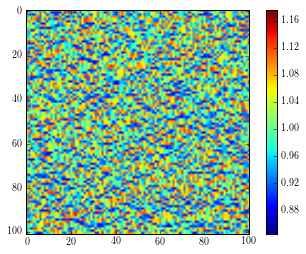
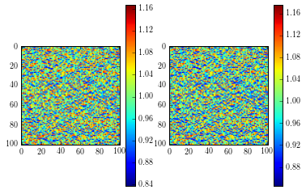
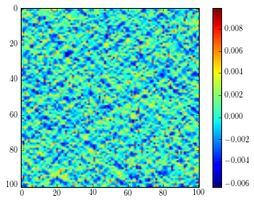

from pymks.datasets.elastic_FE_simulation import ElasticFESimulation
from pymks.datasets import make_elastic_FE_strain_delta
from pymks import MKSRegressionModel
from pymks import DiscreteIndicatorBasis
elastic_modulus = (90., 110.)
poissons_ratio = (0.3, 0.3)
size = (101, 101)
#X = np.zeros((1,) + size, dtype=int)
#X[0, 30:70, 30:70] = 1
#I, J = 50, 50
#R = 25
#xyz = np.indices(size) + 0.5
#mask = R**2 > ((xyz[0] - I)**2 + (xyz[1] - J)**2)
#X[0, mask] = 1
X = np.random.randint(2, size=(1,) + size)
sim = ElasticFESimulation(elastic_modulus=elastic_modulus, poissons_ratio=poissons_ratio)
sim.run(X)
/home/wd15/anaconda/lib/python2.7/site-packages/sfepy/discrete/parse_regions.py:150: DeprecationWarning: Operator '<<' is deprecated, use '<<=' instead
+ ZeroOrMore(')'))
/home/wd15/anaconda/lib/python2.7/site-packages/sfepy/discrete/parse_regions.py:189: DeprecationWarning: Operator '<<' is deprecated, use '<<=' instead
region_expression << atom + ZeroOrMore(aux)
/home/wd15/anaconda/lib/python2.7/site-packages/sfepy/discrete/parse_equations.py:55: DeprecationWarning: Operator '<<' is deprecated, use '<<=' instead
+ ZeroOrMore(')')
/home/wd15/anaconda/lib/python2.7/site-packages/sfepy/discrete/parse_equations.py:55: DeprecationWarning: Operator '<<' is deprecated, use '<<=' instead
+ ZeroOrMore(')')
plt.imshow(sim.strain[0,...,0])
plt.colorbar()
<matplotlib.colorbar.Colorbar instance at 0x7f0b51443cb0>

X_delta, strains_delta = make_elastic_FE_strain_delta(elastic_modulus=elastic_modulus,
poissons_ratio=poissons_ratio,
size=size)
/home/wd15/anaconda/lib/python2.7/site-packages/sfepy/discrete/parse_regions.py:150: DeprecationWarning: Operator '<<' is deprecated, use '<<=' instead
+ ZeroOrMore(')'))
/home/wd15/anaconda/lib/python2.7/site-packages/sfepy/discrete/parse_regions.py:189: DeprecationWarning: Operator '<<' is deprecated, use '<<=' instead
region_expression << atom + ZeroOrMore(aux)
/home/wd15/anaconda/lib/python2.7/site-packages/sfepy/discrete/parse_equations.py:55: DeprecationWarning: Operator '<<' is deprecated, use '<<=' instead
+ ZeroOrMore(')')
/home/wd15/anaconda/lib/python2.7/site-packages/sfepy/discrete/parse_equations.py:55: DeprecationWarning: Operator '<<' is deprecated, use '<<=' instead
+ ZeroOrMore(')')
/home/wd15/anaconda/lib/python2.7/site-packages/sfepy/discrete/parse_regions.py:150: DeprecationWarning: Operator '<<' is deprecated, use '<<=' instead
+ ZeroOrMore(')'))
/home/wd15/anaconda/lib/python2.7/site-packages/sfepy/discrete/parse_regions.py:189: DeprecationWarning: Operator '<<' is deprecated, use '<<=' instead
region_expression << atom + ZeroOrMore(aux)
/home/wd15/anaconda/lib/python2.7/site-packages/sfepy/discrete/parse_equations.py:55: DeprecationWarning: Operator '<<' is deprecated, use '<<=' instead
+ ZeroOrMore(')')
/home/wd15/anaconda/lib/python2.7/site-packages/sfepy/discrete/parse_equations.py:55: DeprecationWarning: Operator '<<' is deprecated, use '<<=' instead
+ ZeroOrMore(')')
basis = DiscreteIndicatorBasis(n_states=2)
model = MKSRegressionModel(basis)
model.fit(X_delta, strains_delta)
y = model.predict(X)
plt.figure()
plt.subplot(121)
plt.imshow(y[0])
plt.colorbar()
plt.subplot(122)
plt.imshow(sim.strain[0,...,0])
plt.colorbar()
<matplotlib.colorbar.Colorbar instance at 0x7f0b501ba4d0>

plt.imshow(sim.strain[0,...,0] - y[0])
plt.colorbar()
<matplotlib.colorbar.Colorbar instance at 0x7f0b4b7c1638>

---------------------------------------------------------------------------
ValueError Traceback (most recent call last)
<ipython-input-22-2d2187dbfee2> in <module>()
----> 1 distance.squareform(x)
/home/wd15/anaconda/lib/python2.7/site-packages/scipy/spatial/distance.pyc in squareform(X, force, checks)
1469 elif len(s) == 2:
1470 if s[0] != s[1]:
-> 1471 raise ValueError('The matrix argument must be square.')
1472 if checks:
1473 is_valid_dm(X, throw=True, name='X')
ValueError: The matrix argument must be square.
x = np.random.random((10, 8))
distance.squareform(y).shape
print (x[None,:] - x[:,None]).shape
File "<ipython-input-29-ba1c6fc79113>", line 1
10!
^
SyntaxError: invalid syntax
P0 = np.pi * 0.25**2
P1 = 1 - P0
(P0 * 120 + P1 * 60) * 0.02